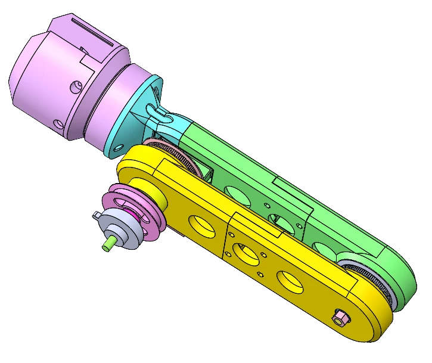
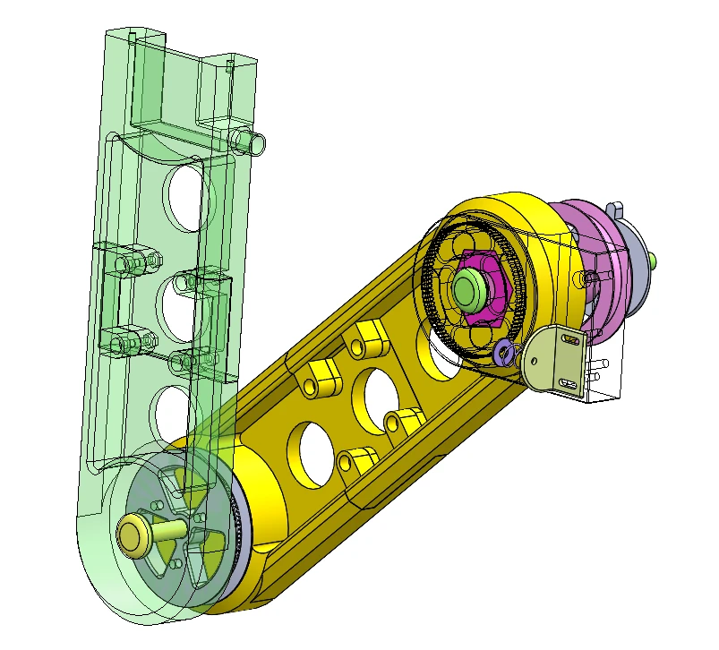
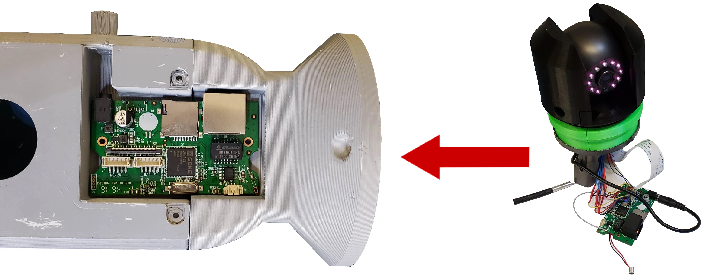

Novel mechanism: Single Input, Dual Joint Movement with Integrated, Self-Contained Motion Control

Designed a mechanical, human-powered robotic arm system for a video production client. Two arms mounted on a backpack, capable of full shoulder and elbow movement, with zero electrical input.
Translated the client's vision into a functional mechanical design, working within the physical constraints of an existing backpack. Iterated through multiple CAD models and 3D printed prototypes to achieve precise, repeatable movement.
Delivered a self-contained robotic arm system driven entirely by human power. A novel coaxial shoulder joint coordinates both arm and forearm movement: no motors, no controllers, no electrical components.
The arm was worn by a performer on set during a live video shoot. Two extended arms rise above the performer's shoulders, each holding a mounted camera, all controlled by the wearer's natural body movement.
The backpack acts as the structural base, distributing weight across the torso while keeping the mechanism self-contained. No visible cables, motors, or controls. The mechanical system is entirely internal.
This real-world deployment validated the core design goal: a fully wearable, power-free robotic arm system suitable for dynamic on-set use.

Annotated design diagram
CAD assembly view
The shoulder uses a coaxial rotor system: two concentric shafts nested within a single joint. The first shaft provides the revolute joint that raises the arm. The second shaft connects to a driven pulley that transmits motion downward through the arm. This arrangement gives the shoulder two independent degrees of freedom within a single compact housing, eliminating the need for separate actuators at each joint.
A toothed timing belt connects two toothed pulleys: one at the elbow (1 DOF) and one fixed externally at the shoulder (0 DOF). Because the shoulder pulley cannot rotate, when the arm raises, the elbow pulley is forced to orbit around it, and since the elbow pulley is locked to the forearm, the forearm rises synchronously with the arm. One cable pull. Two joints move. No elbow actuator required.
The external shoulder pulley is fixed: it has zero degrees of freedom and never rotates. This is the key to the orbital motion: as the arm sweeps upward, the elbow pulley is constrained by the timing belt to roll against the static shoulder pulley, generating forearm rotation as a direct consequence of arm rotation. A motion that conventional systems achieve through gear trains or multi-link kinematic chains here emerges passively from a single fixed point.
Gravity returns the arm to rest without any actuator input. But the final phase (the moment before the arm reaches the body) is caught by a magnetic damper at the shoulder. This serves two functions: it prevents the arm from slamming against the backpack's body on descent, and it locks the arm in place when the wearer is moving, stopping the arms from swinging freely if the backpack wearer runs or changes direction suddenly.
To bring the BackPack Arm to life, I used an iterative rapid prototyping approach, starting from a basic 2D concept and progressively validating each stage before moving to the next.
Early physical prototype
 ▶
▶
Cardboard box model in motion
The camera system was the arm's end-effector, the functional payload the entire mechanism was designed to carry and position. Integrating it required treating the arm not just as a mechanical structure, but as a housing for a live electronics system.

A wireless, battery-powered pan-tilt camera head serves as the arm's end-effector. Being wireless eliminated signal cable routing through the arm joints, a significant simplification given the forearm's orbital motion.
The camera's PCB is housed internally within the 3D printed arm structure. This required the arm geometry to be designed around the electronics from the outset, not retrofitted after.
A single power cable runs from the arm to the battery pack in the backpack, managed with a Flexible Spiral Sheath. This allows the cable to extend, compress, and twist freely across the arm's full range of motion without tangling or fatiguing at the joints.
The backpack carries the battery, the arm positions the camera, the spiral-sheathed cable bridges the two, invisible in operation.
Full mechanism test demonstrating coordinated shoulder and elbow movement driven by a single human input.
 ▶
▶
The plastic prototype replaced the cardboard mockup for this stage. Stiffer linkages and tighter tolerances let the dual-joint action be evaluated under realistic load conditions.
The test validates the core novelty of the mechanism: a single actuated pulley driving two joints simultaneously, coordinated entirely through fixed-pulley and belt interaction: no motors, no electronics, no independent elbow control.
Unlike conventional robotic systems that require dedicated actuators for each joint, this mechanism achieves coordinated multi-joint movement through passive mechanical linkages alone. The gravity-assisted return eliminates the need for a dedicated reset actuator, further reducing complexity without sacrificing control.
The BackPack Arm is built around a coaxial shoulder joint: two concentric shafts, one providing the revolute arm motion, the other driving the pulley system that controls the forearm. At the shoulder, a fixed external pulley (0 DOF) is connected to a toothed elbow pulley (1 DOF) via a timing belt drive. Because the shoulder pulley cannot rotate, raising the arm forces the elbow pulley to orbit around it, and since that pulley is locked to the forearm, the forearm rises in perfect synchrony. Two degrees of freedom. One cable pull. No elbow actuator.
The return is handled by gravity, caught at the final moment by a magnetic damper that prevents impact against the backpack's body and locks the arms in place during dynamic movement, stopping the arms from swinging when the wearer runs or accelerates.
The result replaces what would conventionally require independent actuators, encoders, and control logic at each joint, using only a mechanical timing belt drive, a fixed pulley, and a magnet.
See the full range of mechanical and product design work in the portfolio.